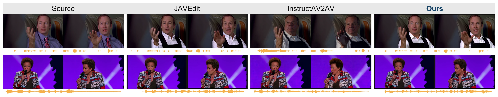
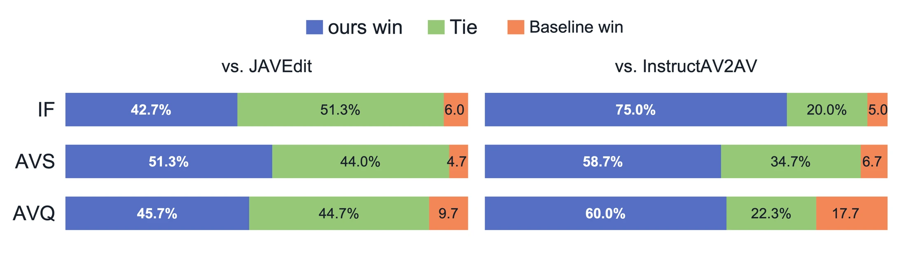

Learn to edit with RAVEdit
Train editing adapters and role-aware attention on 30k publicly released JAVEdit triplets, using a frozen LTX-2.5 backbone.
Joint audio–visual editing
Joint Audio-Visual Editing with
Role-Aware Cross-Modal Attention
and Negative-Aware Fine-Tuning
1 Nanjing University2 Video Rebirth
The idea
Instruction-guided audio-visual editing calls for more than changing a frame or a sound. The requested changes must work together, while unrelated content stays intact.
RAVEdit-NFT combines role-aware cross-modal attention with negative-aware fine-tuning. A supervised base editor learns to balance source context and evolving target references. Feedback on quality, preservation, and synchronization then refines the editor without additional paired editing targets.
Experiments on JAVEditBench show improved audio quality and audio-visual synchronization on both the speech subset and the full benchmark.
Balance source context and evolving target cues as denoising progresses.
Learn from generated candidates without new paired editing targets.
Improve quality and synchronization while preserving unrelated content.
Inside the framework
A joint editor, adaptive cross-modal references, and a second stage that learns from the quality of its own edits.

Train editing adapters and role-aware attention on 30k publicly released JAVEdit triplets, using a frozen LTX-2.5 backbone.
Use speech-editing conditions and feedback on generated candidates. No additional paired edited targets are needed in this stage.
See the edits
Compare the source and edited audio-visual clips side by side. Each pair shares one editing instruction.
Loading example slots…
Audio is part of the edit. Play one clip at a time to compare the sound and synchronization.
A closer look
Appearance and dialogue editing examples from the manuscript, with source frames and baseline outputs.

Evaluation
Results on the full JAVEditBench, as reported in the accompanying manuscript. Higher is better for all metrics below.
| Method | VTSS ↑ | UTMOS ↑ | AV Sync ↑ | Instruction compliance ↑ | Video fidelity ↑ | AV quality ↑ |
|---|---|---|---|---|---|---|
| AVI-Edit | 0.0604 | 2.34 | 0.272 | 3.49 | 3.89 | 3.86 |
| InstructAV2AV | 0.0576 | 1.61 | 0.185 | 3.34 | 4.15 | 3.55 |
| JAVEdit (30k) | 0.0514 | 2.45 | 0.326 | 4.17 | 4.24 | 3.74 |
| RAVEdit | 0.0519 | 2.52 | 0.324 | 4.26 | 4.31 | 3.74 |
| RAVEdit-NFT Ours | 0.0531 | 2.66 | 0.342 | 4.26 | 4.33 | 3.86 |
| w/ Flow-GRPO | 0.0518 | 2.50 | 0.331 | 4.28 | 4.27 | 3.76 |
| w/ Speech-SFT | 0.0510 | 2.40 | 0.272 | 3.06 | 4.25 | 3.72 |
Bold denotes the best reported value in each column, including ties. JAVEdit (30k) is reproduced using the publicly released data and the same LTX-2.5 backbone. AVI-Edit additionally uses spatial masks and an audio agent. Instruction compliance, video fidelity, and AV quality are evaluated with Qwen3-Omni. Flow-GRPO and Speech-SFT are alternative post-training strategies initialized from RAVEdit.
| Method | VTSS ↑ | UTMOS ↑ | AV Sync ↑ |
|---|---|---|---|
| AVI-Edit | 0.0599 | 2.33 | 0.365 |
| InstructAV2AV | 0.0632 | 2.42 | 0.241 |
| JAVEdit (30k) | 0.0554 | 3.09 | 0.529 |
| RAVEdit | 0.0562 | 3.18 | 0.529 |
| RAVEdit-NFT | 0.0574 | 3.30 | 0.554 |
| w/ Flow-GRPO | 0.0552 | 3.15 | 0.534 |
| w/ Speech-SFT | 0.0543 | 3.25 | 0.523 |
Human evaluation
20 participants evaluated 30 sampled cases in randomized pairwise comparisons of instruction following, audio-visual synchronization, and audio-visual quality.
NFT post-training currently focuses mainly on speech editing.
